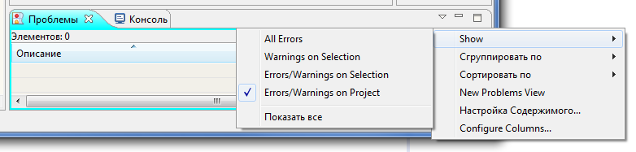

Для создания нового проекта необходимо в главном меню выбрать: Файл > Создать > Модула-2 проект. В открывшемся мастере настройки необходимо указать параметры нового проекта.
Прежде всего, необходимо указать имя нового проекта (поле Название проекта).
Далее необходимо указать месторасположение корневой директории проекта (Расположение).
Затем следует выбрать, какая КСП будет использоваться (поле Система разработки): если явно не указать другое, то будет использована та КСП, которая указана как используемая по умолчанию в настройках интегрированной среды. Нажав на кнопку Настроить...: можно перейти к диалогу настройки КСП интегрированной среды.
Для нового проекта можно сразу создать проектный файл, главный модуль, стандартную структуру директорий и файл перенаправлений. Имена файла проекта и файла главного модуля указываются в соответствующих строках мастера настройки. Если отмечен признак Использовать шаблоны системы разработки, то файлы будут созданы по шаблонам, указанным в настройках КСП. Структура директорий и имя файла перенаправлений также берутся из настроек выбранной КСП.
После нажатия кнопки Готово новый Модула-2 проект будет создан и добавлен в текущую рабочую область. Созданные файлы и директории отобразятся в менеджере проектов.
Для создания проекта уже существующего Модула-2 кода необходимо в главном меню выбрать: Файл > Создать > Модула-2 проект для существующего кода. В открывшемся мастере настройки необходимо указать параметры проекта.

Имя нового проекта (Название проекта) можно указать явным образом, либо после выбора корневой директории проекта (поле Расположение) имя будет подставлено автоматически.
Также следует выбрать, какая КСП будет использоваться (поле Система разработки): если явно не указать другое, то будет использована та КСП, которая указана как используемая по умолчанию в настройках интегрированной среды. Нажав на кнопку Настроить...: можно перейти к диалогу настройки КСП интегрированной среды.
Далее необходимо указать, какой именно проектный файл (поле Проектный файл) или главный модуль (поле Главный модуль) будет использоваться при компиляции программы. При выборе корневой директории проекта система попытается заполнить данные поля автоматически. Следует проверить подставленные значения или заполнить поле вручную: по нажатию кнопки Обзор... откроется проводник, где можно выбрать файл проекта *.prj или соответственно файл главного модуля *.mod или *.ob2.
После нажатия кнопки Готово новый Модула-2 проект будет создан и добавлен в текущую рабочую область. Созданные файлы и директории отобразятся в менеджере проектов.
Для того чтобы скомпилировать проект необходимо выбрать его в окне менеджера проектов, а затем в главном меню выбрать Проект > Собрать проект или Проект > Пересобрать проект. Первая команда запускает инкрементальную сборку проекта, а вторая полную пересборку проекта. Данные команды дублируются в контекстном меню проекта, вызываемом по нажатию правой кнопки мыши, кнопками на панели инструментов, а также могут быть вызваны комбинацией горячих клавиш: Shift + F9 или Ctrl + Shift + F9 соответственно.
Кроме того, поддерживается режим автоматической компиляции при сохранении измененного файла на диск. По умолчанию данный режим выключен. Чтобы его включить в главном меню необходимо отметить пункт Проект > Автоматическая компоновка.
Ошибки и предупреждения компилятора отображаются в специальном окне Проблемы. По умолчанию в этом окне показываются замечания для всех проектов, открытых в интегрированной среде. Если же в панели инструментов окна выбрать пункт Show > Error/Warnings on Project, то предупреждения и ошибки будут показываться только для текущего проекта.

Для того чтобы запустить Модула-2 программу необходимо создать конфигурацию запуска (Run Configuration). В конфигурации запуска указывается, для какого проекта она создается, имя исполняемого файла который необходимо запустить и опционально параметры, с которыми нужно запустить программу.
Для того чтобы создать конфигурацию запуска в главном меню необходимо выбрать: Запуск > Выполнить.... В открывшемся диалоговом окне необходимо указать параметры запуска.
В левой панели открывшегося диалога нужно выбрать XDS Модула-2 программа, щелчком правой кнопки мыши открыть контекстное меню и выбрать Создать.

Будет создана новая конфигурация запуска, а в правой панели откроется диалог для ввода параметров.

Каждая конфигурация запуска должна иметь свое уникальное имя – его необходимо ввести в поле Имя.
На вкладке Главная необходимо выбрать проект, для которого будет создана конфигурация запуска (выбирается из проектов, открытых в текущей рабочей области), а также программный файл *.prg или исполняемый файл *.exe для запуска. По нажатию кнопки Применить можно сохранить изменения для редактируемой конфигурации запуска; кнопка Восстановить восстанавливает последние сохраненные параметры.
На остальных вкладках можно ввести дополнительные необязательные параметры конфигурации запуска.
После заполнения обязательных полей необходимо нажать кнопку Запуск для запуска программы.
Один раз, создав конфигурацию запуска ее можно пользовать снова и снова. Для этого ее нужно просто выбрать из списка доступного из главного меню: Запуск > Хронология выполнения.
Большинство необходимых действий по запуску программы доступно через кнопку Выполнить панели инструментов:

Она организована в виде выпадающего списка последних конфигураций запуска и команд для их редактирования. Лог выполнения программы отобразится в окне Консоль.
Для того чтобы начать отлаживать Модула-2 программу необходимо создать конфигурацию отладки (Debug Configuration) или воспользоваться уже готовой Run Configuration. Вообще-то разницы между конфигурацией запуска и конфигурацией отладки нет никакой. Они абсолютно одинаковы, только вызываются через разные пункты меню, и в случае конфигурации отладки программа запускает под отладчиком.
Для того чтобы создать конфигурацию отладки в главном меню необходимо выбрать: Запуск > Отладить.... Затем в левой панели открывшегося диалога выбрать XDS Модула-2 программа, щелчком правой кнопки мыши открыть контекстное меню и выбрать Создать.
Каждая конфигурация запуска должна иметь свое уникальное имя – его необходимо ввести в поле Имя.
Остальные поля заполняются аналогично заполнению полей при создании конфигурации запуска.
После заполнения обязательных полей необходимо нажать кнопку Отладка для запуска программы.
Один раз, создав конфигурацию отладки ее можно пользовать снова и снова. Для этого ее нужно просто выбрать из списка доступного из главного меню: Запуск > Хронология отладки.
Большинство необходимых действий по запуску отладчика программ доступно через кнопку Отладка панели инструментов:

Она организована в виде выпадающего списка последних конфигураций отладки и команд для их редактирования.